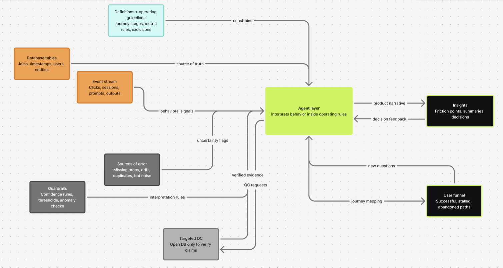

Event analytics has always promised a clear view of how users move through a product. In practice, it often becomes a translation problem. Raw events land in a database. Analysts write SQL. Dashboards get built. Product teams interpret the dashboard. Then someone asks a better question and the loop starts again.
That workflow is still useful, but it is heavy. It assumes that the main bottleneck is access to data. In my experience, the harder bottleneck is interpretation: turning messy behavioral exhaust into a usable product narrative.
With Emisar, the operating model has started to look different. Agents sit between the event layer and the product decision. They summarize user journeys, identify likely friction points, flag uncertainty, and suggest the specific database checks needed to verify the story. The database is still important, but it becomes the QC layer rather than the place where every question begins.
The bottleneck is interpretation. Every new question reopens the loop: more SQL, more dashboards, more manual stitching.
The old loop
The traditional approach asks humans to do almost every translation step. Someone has to know which events matter, how they connect, where the tracking is unreliable, which users should be excluded, and which funnel view is worth building. Even when the data is available, the journey is not obvious.
This creates a common pattern: the team has plenty of events, but the product question still moves slowly. A simple question like "where are users getting stuck?" turns into a chain of manual work: inspect event names, write exploratory queries, build temporary funnels, compare cohorts, check edge cases, and explain the finding to stakeholders.
The output is usually a chart. But the thing the team actually needs is a judgment: what happened, why it matters, how confident we are, and what to do next.

The agent is the operating layer between messy behavioral data and product judgment. Inputs flow in from events and database tables; definitions, guardrails, errors, and QC constrain the interpretation; user funnels and insights flow out.
The agent-led model
The agent-led model does not remove complexity. It gives the complexity an operating layer. Events are still messy. User identifiers still need care. Timestamps can still mislead. Properties can be missing. Schemas drift. Duplicate events happen. Some behavior is bot noise. None of that disappears because an agent is involved.
The difference is that the agent can work against definitions and operating guidelines. It can use journey stages, metric definitions, exclusions, confidence thresholds, and QC guardrails as the frame for analysis. Instead of freely hallucinating a story, the agent is asked to reason inside a controlled analytical environment.
Emisar as the case study
For Emisar, the interesting shift was not just speed. It was the change in operating model. Agents handled the first-pass behavioral analysis. They summarized user journeys, identified meaningful sequences, and proposed where users were getting stuck. The database was opened mainly to verify the claims the agents made, not to manually discover every pattern from scratch.
A typical workflow looked more like this: ask the agent to summarize the journey, let it identify the major paths and drop-offs, review the reasoning, then open the database only for targeted QC. If the agent claimed that a specific segment was failing at a specific step, that claim was checked. If it flagged low confidence because of missing properties or ambiguous event names, that became the next QC task.
This matters because it changes the analyst's job. The human is no longer the person manually stitching every event path together from scratch. The human becomes the reviewer of evidence, definitions, and implications. The work moves from extraction to supervision.
What agents are actually doing
- Reading behavior: grouping raw events into meaningful user actions and journey stages.
- Summarizing paths: describing successful, stalled, and abandoned journeys in plain language.
- Flagging uncertainty: calling out missing properties, schema drift, duplicate events, and weak joins.
- Suggesting QC: narrowing the database checks to the claims that actually matter.
- Translating into product language: turning event sequences into friction points, hypotheses, and decisions.
The human role
The agent does not replace judgment. It changes where judgment is applied. Humans still need to decide whether a pattern matters, whether the definition is right, whether the sample is meaningful, and whether the recommended action makes sense.
The best version of this workflow is not blind automation. It is assisted reasoning. Agents generate the first structured read of behavior. Humans challenge it, verify the important claims, and turn the finding into action.
The takeaway
Event analytics in the age of agents is less about building more dashboards and more about creating a governed analytical interface over behavioral data. The agent reads the messy event layer, applies definitions and operating guidelines, surfaces a journey narrative, and asks for database QC where the evidence needs confirmation.
That is the shift Emisar points toward: not analytics without data work, but analytics with far less manual data work in the discovery phase. The database remains the source of truth. The agent becomes the control tower that helps decide where to look.